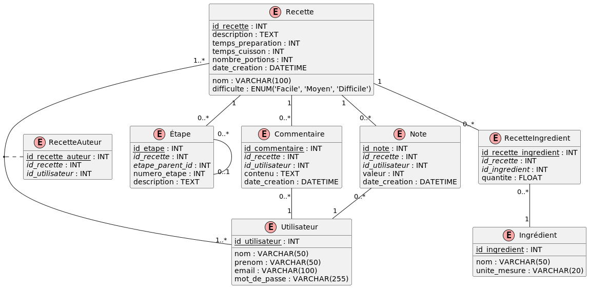

2. Recettes de cuisine
Création
Voir le fichier recettes_create.sql.
DEA
Code
@startuml
!define TABLE(name,desc) class name as "desc" << (T,#FFAAAA) >>
!define PK(x) <u>x</u>
!define FK(x) <i>x</i>
hide empty methods
hide empty fields
TABLE(Recette, "Recette") {
PK(id_recette) : INT
nom : VARCHAR(100)
description : TEXT
temps_preparation : INT
temps_cuisson : INT
difficulte : ENUM('Facile', 'Moyen', 'Difficile')
nombre_portions : INT
date_creation : DATETIME
}
TABLE(Utilisateur, "Utilisateur") {
PK(id_utilisateur) : INT
nom : VARCHAR(50)
prenom : VARCHAR(50)
email : VARCHAR(100)
mot_de_passe : VARCHAR(255)
}
TABLE(Ingredient, "Ingrédient") {
PK(id_ingredient) : INT
nom : VARCHAR(50)
unite_mesure : VARCHAR(20)
}
TABLE(Etape, "Étape") {
PK(id_etape) : INT
FK(id_recette) : INT
FK(etape_parent_id) : INT
numero_etape : INT
description : TEXT
}
TABLE(Commentaire, "Commentaire") {
PK(id_commentaire) : INT
FK(id_recette) : INT
FK(id_utilisateur) : INT
contenu : TEXT
date_creation : DATETIME
}
TABLE(Note, "Note") {
PK(id_note) : INT
FK(id_recette) : INT
FK(id_utilisateur) : INT
valeur : INT
date_creation : DATETIME
}
TABLE(RecetteIngredient, "RecetteIngredient") {
PK(id_recette_ingredient) : INT
FK(id_recette) : INT
FK(id_ingredient) : INT
quantite : FLOAT
}
TABLE(RecetteAuteur, "RecetteAuteur") {
PK(id_recette_auteur) : INT
FK(id_recette) : INT
FK(id_utilisateur) : INT
}
Recette "1" -- "0..*" Etape
Recette "1" -- "0..*" Commentaire
Recette "1" -- "0..*" Note
Recette "1" -- "0..*" RecetteIngredient
Recette "1..*" -- "1..*" Utilisateur
(Recette, Utilisateur) .. RecetteAuteur
RecetteIngredient "0..*" -- "1" Ingredient
Commentaire "0..*" -- "1" Utilisateur
Note "0..*" -- "1" Utilisateur
Etape "0..*" -- "0..1" Etape
@enduml

Ce diagramme représente une structure de base de données pour un site web de recettes avec les entités suivantes :
- Recette : Contient les informations générales sur une recette.
- Utilisateur : Représente les utilisateurs du site, qui peuvent être auteurs de recettes ou laisser des commentaires et des notes.
- Ingrédient : Liste tous les ingrédients possibles.
- Étape : Décrit les étapes de préparation d'une recette.
- Commentaire : Stocke les commentaires des utilisateurs sur les recettes.
- Note : Enregistre les notes d'appréciation données par les utilisateurs aux recettes.
- RecetteIngredient : Table de liaison entre Recette et Ingrédient, permettant de spécifier les quantités.
- RecetteAuteur : Table de liaison entre Recette et Utilisateur, permettant d'avoir plusieurs auteurs par recette.
Requêtes
Simple
1. Trouver les recettes qui demandent un temps de préparation de moins de 30 minutes.
Difficulté : 1
Code
SELECT nom, temps_preparation
FROM Recette
WHERE temps_preparation < 30
ORDER BY temps_preparation;
2. Lister tous les ingrédients dont l'unité de mesure est en grammes (g).
Difficulté : 1
Code
SELECT nom, unite_mesure
FROM Ingredient
WHERE unite_mesure = 'g'
ORDER BY nom;
3. Afficher les utilisateurs dont le nom de famille commence par 'D'.
Difficulté : 1
Code
SELECT nom, prenom, email
FROM Utilisateur
WHERE nom LIKE 'D%'
ORDER BY nom, prenom;
4. Trouver les recettes classées comme "Difficile".
Difficulté : 1
Code
SELECT nom, temps_preparation, temps_cuisson
FROM Recette
WHERE difficulte = 'Difficile'
ORDER BY nom;
5. Lister les commentaires créés après le 1er janvier 2024.
Difficulté : 1
Code
SELECT id_recette, contenu, date_creation
FROM Commentaire
WHERE date_creation > '2024-01-01'
ORDER BY date_creation DESC;
6. Afficher le nom des recettes avec le nom et prénom de leur auteur.
Difficulté : 2
Code
SELECT r.nom AS nom_recette, u.prenom, u.nom
FROM Recette r
JOIN RecetteAuteur ra ON r.id_recette = ra.id_recette
JOIN Utilisateur u ON ra.id_utilisateur = u.id_utilisateur
ORDER BY r.nom;
7. Lister tous les ingrédients de la recette "Quiche Lorraine" avec leurs quantités.
Difficulté : 2
Code
SELECT r.nom AS nom_recette, i.nom AS nom_ingredient, ri.quantite, i.unite_mesure
FROM Recette r
JOIN RecetteIngredient ri ON r.id_recette = ri.id_recette
JOIN Ingredient i ON ri.id_ingredient = i.id_ingredient
WHERE r.nom = 'Quiche Lorraine'
ORDER BY i.nom;
8. Afficher toutes les étapes de préparation de la recette "Ratatouille" dans l'ordre.
Difficulté : 2
Code
SELECT r.nom AS nom_recette, e.numero_etape, e.description
FROM Recette r
JOIN Etape e ON r.id_recette = e.id_recette
WHERE r.nom = 'Ratatouille'
ORDER BY e.numero_etape;
9. Trouver toutes les recettes avec leurs notes moyennes (si elles en ont).
Difficulté : 2
Code
SELECT r.nom AS nom_recette, AVG(n.valeur) AS note_moyenne
FROM Recette r
LEFT JOIN Note n ON r.id_recette = n.id_recette
GROUP BY r.id_recette, r.nom
ORDER BY note_moyenne DESC NULLS LAST;
10. Lister tous les utilisateurs et le nombre de recettes qu'ils ont créées (y compris ceux qui n'en ont pas créé).
Difficulté : 2
Code
SELECT u.prenom, u.nom, COUNT(ra.id_recette) AS nombre_recettes
FROM Utilisateur u
LEFT JOIN RecetteAuteur ra ON u.id_utilisateur = ra.id_utilisateur
GROUP BY u.id_utilisateur, u.prenom, u.nom
ORDER BY nombre_recettes DESC;
11. Afficher les recettes avec leurs commentaires, y compris celles sans commentaire.
Difficulté : 2
Code
SELECT r.nom AS nom_recette, c.contenu AS commentaire
FROM Recette r
LEFT JOIN Commentaire c ON r.id_recette = c.id_recette
ORDER BY r.nom, c.date_creation;
12. Trouver les recettes qui utilisent de la "Farine" et leurs quantités.
Difficulté : 2
Code
SELECT r.nom AS nom_recette, ri.quantite, i.unite_mesure
FROM Recette r
JOIN RecetteIngredient ri ON r.id_recette = ri.id_recette
JOIN Ingredient i ON ri.id_ingredient = i.id_ingredient
WHERE i.nom = 'Farine'
ORDER BY ri.quantite DESC;
13. Lister les utilisateurs qui ont à la fois créé des recettes et laissé des commentaires.
Difficulté : 2
Code
SELECT DISTINCT u.prenom, u.nom
FROM Utilisateur u
JOIN RecetteAuteur ra ON u.id_utilisateur = ra.id_utilisateur
JOIN Commentaire c ON u.id_utilisateur = c.id_utilisateur
ORDER BY u.nom, u.prenom;
14. Afficher les recettes avec leur difficulté et le nom de leur auteur, triées par difficulté décroissante.
Difficulté : 2
Code
SELECT r.nom AS nom_recette, r.difficulte, u.prenom, u.nom
FROM Recette r
JOIN RecetteAuteur ra ON r.id_recette = ra.id_recette
JOIN Utilisateur u ON ra.id_utilisateur = u.id_utilisateur
ORDER BY CASE
WHEN r.difficulte = 'Difficile' THEN 1
WHEN r.difficulte = 'Moyen' THEN 2
WHEN r.difficulte = 'Facile' THEN 3
END,
r.nom;
15. Trouver les recettes qui utilisent tous les ingrédients d'une salade niçoise (supposons que ce sont : (Thon, Olive, Oeufs).
Difficulté : 3
Code
SELECT r.nom AS nom_recette
FROM Recette r
WHERE NOT EXISTS (SELECT i.id_ingredient
FROM Ingredient i
WHERE i.nom IN ('Thon', 'Olive', 'Oeufs')
AND NOT EXISTS (SELECT 1
FROM RecetteIngredient ri
WHERE ri.id_recette = r.id_recette
AND ri.id_ingredient = i.id_ingredient))
ORDER BY r.nom;
16. Calculer le nombre de recettes pour chaque niveau de difficulté.
Difficulté : 2
Code
SELECT difficulte, COUNT(*) AS nombre_recettes
FROM Recette
GROUP BY difficulte
ORDER BY nombre_recettes DESC;
17. Trouver le temps de préparation moyen des recettes pour chaque nombre de portions.
Difficulté : 2
Code
SELECT nombre_portions, AVG(temps_preparation) AS temps_moyen_preparation
FROM Recette
GROUP BY nombre_portions
ORDER BY nombre_portions;
18. Lister les unités de mesure utilisées et le nombre d'ingrédients pour chaque unité.
Difficulté : 2
Code
SELECT unite_mesure, COUNT(*) AS nombre_ingredients
FROM Ingredient
GROUP BY unite_mesure
ORDER BY nombre_ingredients DESC;
19. Trouver la note maximale, minimale et moyenne pour chaque recette.
Difficulté : 2
Code
SELECT id_recette,
MAX(valeur) AS note_max,
MIN(valeur) AS note_min,
AVG(valeur) AS note_moyenne
FROM Note
GROUP BY id_recette
ORDER BY note_moyenne DESC;
20. Compter le nombre de commentaires par utilisateur.
Difficulté : 2
Code
SELECT id_utilisateur, COUNT(*) AS nombre_commentaires
FROM Commentaire
GROUP BY id_utilisateur
ORDER BY nombre_commentaires DESC;
21. Afficher le nom des recettes et le nombre d'ingrédients qu'elles contiennent.
Difficulté : 2
Code
SELECT r.nom AS nom_recette, COUNT(ri.id_ingredient) AS nombre_ingredients
FROM Recette r
LEFT JOIN RecetteIngredient ri ON r.id_recette = ri.id_recette
GROUP BY r.id_recette, r.nom
ORDER BY nombre_ingredients DESC;
22. Trouver les utilisateurs qui ont créé le plus de recettes, avec le nombre de recettes créées.
Difficulté : 3
Code
SELECT u.prenom, u.nom, COUNT(ra.id_recette) AS nombre_recettes
FROM Utilisateur u
LEFT JOIN RecetteAuteur ra ON u.id_utilisateur = ra.id_utilisateur
GROUP BY u.id_utilisateur, u.prenom, u.nom
ORDER BY nombre_recettes DESC;
23. Calculer le temps de préparation moyen des recettes pour chaque auteur.
Difficulté : 3
Code
SELECT u.prenom, u.nom, AVG(r.temps_preparation) AS temps_moyen_preparation
FROM Utilisateur u
JOIN RecetteAuteur ra ON u.id_utilisateur = ra.id_utilisateur
JOIN Recette r ON ra.id_recette = r.id_recette
GROUP BY u.id_utilisateur, u.prenom, u.nom
ORDER BY temps_moyen_preparation DESC;
24. Lister les ingrédients les plus utilisés dans les recettes, avec le nombre de recettes les utilisant.
Difficulté : 3
Code
SELECT i.nom AS nom_ingredient, COUNT(DISTINCT ri.id_recette) AS nombre_recettes
FROM Ingredient i
JOIN RecetteIngredient ri ON i.id_ingredient = ri.id_ingredient
GROUP BY i.id_ingredient, i.nom
ORDER BY nombre_recettes DESC LIMIT 10;
25. Trouver la note moyenne des recettes pour chaque niveau de difficulté.
Difficulté : 3
Code
SELECT r.difficulte, AVG(n.valeur) AS note_moyenne
FROM Recette r
LEFT JOIN Note n ON r.id_recette = n.id_recette
GROUP BY r.difficulte
ORDER BY note_moyenne DESC;
26. Trouver les recettes qui ont un temps de préparation supérieur à la moyenne.
Difficulté : 3
Code
SELECT nom, temps_preparation
FROM Recette
WHERE temps_preparation > (SELECT AVG(temps_preparation)
FROM Recette)
ORDER BY temps_preparation DESC;
27. Lister les utilisateurs qui ont créé des recettes, mais n'ont jamais laissé de commentaire.
Difficulté : 3
Code
SELECT DISTINCT u.prenom, u.nom
FROM Utilisateur u
JOIN RecetteAuteur ra ON u.id_utilisateur = ra.id_utilisateur
WHERE u.id_utilisateur NOT IN (SELECT DISTINCT id_utilisateur
FROM Commentaire)
ORDER BY u.nom, u.prenom;
28. Trouver les recettes qui utilisent tous les ingrédients présents dans la recette "Quiche Lorraine".
Difficulté : 4
Code
SELECT r.nom
FROM Recette r
WHERE NOT EXISTS (SELECT ri.id_ingredient
FROM RecetteIngredient ri
JOIN Recette q ON ri.id_recette = q.id_recette
WHERE q.nom = 'Quiche Lorraine'
AND ri.id_ingredient NOT IN (SELECT id_ingredient
FROM RecetteIngredient
WHERE id_recette = r.id_recette))
AND r.nom != 'Quiche Lorraine'
ORDER BY r.nom;
29. Afficher les recettes dont la note moyenne est supérieure à la note moyenne globale de toutes les recettes.
Difficulté : 3
Code
SELECT r.nom, AVG(n.valeur) AS note_moyenne
FROM Recette r
JOIN Note n ON r.id_recette = n.id_recette
GROUP BY r.id_recette, r.nom
HAVING AVG(n.valeur) > (SELECT AVG(valeur)
FROM Note)
ORDER BY note_moyenne DESC;
30. Trouver les utilisateurs qui ont commenté toutes les recettes qu'ils ont créées.
Difficulté : 4
Code
SELECT u.prenom, u.nom
FROM Utilisateur u
WHERE NOT EXISTS (SELECT ra.id_recette
FROM RecetteAuteur ra
WHERE ra.id_utilisateur = u.id_utilisateur
AND NOT EXISTS (SELECT c.id_commentaire
FROM Commentaire c
WHERE c.id_recette = ra.id_recette
AND c.id_utilisateur = u.id_utilisateur))
AND EXISTS (SELECT 1
FROM RecetteAuteur ra
WHERE ra.id_utilisateur = u.id_utilisateur)
ORDER BY u.nom, u.prenom;
31. Lister les 3 recettes les plus commentées avec leur nombre de commentaires.
Difficulté : 3
Code
WITH CommentCount AS (SELECT id_recette, COUNT(*) AS nb_commentaires
FROM Commentaire
GROUP BY id_recette)
SELECT r.nom, cc.nb_commentaires
FROM Recette r
JOIN CommentCount cc ON r.id_recette = cc.id_recette
ORDER BY cc.nb_commentaires DESC LIMIT 3;
32. Trouver les utilisateurs qui ont créé des recettes et laissé des commentaires, avec le nombre de recettes et de commentaires.
Difficulté : 3
Code
WITH RecetteCount AS (SELECT id_utilisateur, COUNT(*) AS nb_recettes
FROM RecetteAuteur
GROUP BY id_utilisateur),
CommentCount AS (SELECT id_utilisateur, COUNT(*) AS nb_commentaires
FROM Commentaire
GROUP BY id_utilisateur)
SELECT u.prenom,
u.nom,
COALESCE(rc.nb_recettes, 0) AS nb_recettes,
COALESCE(cc.nb_commentaires, 0) AS nb_commentaires
FROM Utilisateur u
LEFT JOIN RecetteCount rc ON u.id_utilisateur = rc.id_utilisateur
LEFT JOIN CommentCount cc ON u.id_utilisateur = cc.id_utilisateur
WHERE rc.nb_recettes > 0
OR cc.nb_commentaires > 0
ORDER BY nb_recettes DESC, nb_commentaires DESC;
33. Calculer le score total de chaque recette basé sur ses notes (5 points par note 5, 4 points par note 4, etc.) et afficher le top 5.
Difficulté : 4
Code
WITH ScoreCalculation AS (SELECT id_recette,
SUM(CASE
WHEN valeur = 5 THEN 5
WHEN valeur = 4 THEN 4
WHEN valeur = 3 THEN 3
WHEN valeur = 2 THEN 2
WHEN valeur = 1 THEN 1
ELSE 0
END) AS score_total
FROM Note
GROUP BY id_recette)
SELECT r.nom, sc.score_total
FROM Recette r
JOIN ScoreCalculation sc ON r.id_recette = sc.id_recette
ORDER BY sc.score_total DESC LIMIT 5;
34. Trouver les "super utilisateurs" qui ont créé au moins 2 recettes et laissé au moins 3 commentaires.
Difficulté : 3
Code
WITH UserActivity AS (SELECT u.id_utilisateur,
COUNT(DISTINCT ra.id_recette) AS recettes_creees,
COUNT(DISTINCT c.id_commentaire) AS commentaires_laisses
FROM Utilisateur u
LEFT JOIN RecetteAuteur ra ON u.id_utilisateur = ra.id_utilisateur
LEFT JOIN Commentaire c ON u.id_utilisateur = c.id_utilisateur
GROUP BY u.id_utilisateur)
SELECT u.prenom, u.nom, ua.recettes_creees, ua.commentaires_laisses
FROM Utilisateur u
JOIN UserActivity ua ON u.id_utilisateur = ua.id_utilisateur
WHERE ua.recettes_creees >= 2
AND ua.commentaires_laisses >= 3
ORDER BY ua.recettes_creees DESC, ua.commentaires_laisses DESC;
35. Créer une hiérarchie des étapes de recette, en supposant que chaque étape puisse avoir des sous-étapes (utilisation de WITH RECURSIVE).
Difficulté : 4
Code
WITH RECURSIVE EtapeHierarchy AS (SELECT id_etape, id_recette, numero_etape, description, etape_parent_id, 0 AS niveau
FROM Etape
WHERE etape_parent_id IS NULL
UNION ALL
SELECT e.id_etape,
e.id_recette,
e.numero_etape,
e.description,
e.etape_parent_id,
eh.niveau + 1
FROM Etape e
JOIN EtapeHierarchy eh ON e.etape_parent_id = eh.id_etape)
SELECT r.nom AS nom_recette,
REPEAT(' ', niveau) || eh.numero_etape || '. ' || eh.description AS etape_detaillee
FROM EtapeHierarchy eh
JOIN Recette r ON eh.id_recette = r.id_recette
ORDER BY r.nom, eh.id_recette, eh.niveau, eh.numero_etape;
36. Lister tous les noms d'utilisateurs et de recettes dans une seule colonne, en indiquant s'il s'agit d'un utilisateur ou d'une recette.
Difficulté : 3
Code
SELECT nom AS nom, 'Utilisateur' AS type
FROM Utilisateur
UNION
SELECT nom, 'Recette' AS type
FROM Recette
ORDER BY type, nom;
37. Catégoriser les recettes en fonction de leur temps total de préparation (préparation + cuisson).
Difficulté : 3
Utilisation de CASE WHEN
'Rapide': < 30 minutes'Moyen': >= 30 et < 60 minutes'Long': >= 60 minutes
Code
SELECT nom,
temps_preparation + temps_cuisson AS temps_total,
CASE
WHEN temps_preparation + temps_cuisson < 30 THEN 'Rapide'
WHEN temps_preparation + temps_cuisson BETWEEN 30 AND 60 THEN 'Moyen'
ELSE 'Long'
END AS categorie_temps
FROM Recette
ORDER BY temps_total;
38. Lister chaque recette avec tous ses ingrédients concaténés dans une seule chaîne.
Difficulté : 3
Utilisation de STRING_AGG.
Code
SELECT r.nom,
STRING_AGG(i.nom, ', ' ORDER BY i.nom) AS ingredients
FROM Recette r
JOIN RecetteIngredient ri ON r.id_recette = ri.id_recette
JOIN Ingredient i ON ri.id_ingredient = i.id_ingredient
GROUP BY r.id_recette, r.nom
ORDER BY r.nom;
39. Classer les recettes par difficulté et leur attribuer un rang basé sur leur temps de préparation.
Difficulté : 3
Utilisation des "WINDOW FUNCTIONS".
Code
SELECT nom,
difficulte,
temps_preparation,
RANK() OVER (PARTITION BY difficulte ORDER BY temps_preparation) AS rang_temps_prep
FROM Recette
ORDER BY difficulte, rang_temps_prep;
40. Pour chaque utilisateur, trouver sa recette la mieux notée.
Difficulté : 4
Utilisation de LATERAL JOIN
Code
SELECT u.nom AS nom_utilisateur, best_recipe.nom AS meilleure_recette, avg_note
FROM Utilisateur u
LEFT JOIN LATERAL (
SELECT ra.id_utilisateur, r.nom, AVG(n.valeur) AS avg_note
FROM RecetteAuteur ra
JOIN Recette r ON ra.id_recette = r.id_recette
LEFT JOIN Note n ON r.id_recette = n.id_recette
WHERE ra.id_utilisateur = u.id_utilisateur
GROUP BY ra.id_utilisateur, r.id_recette, r.nom
ORDER BY avg_note DESC NULLS LAST
LIMIT 1
) AS best_recipe
ON true
ORDER BY avg_note DESC NULLS LAST;
41. Comparer le nombre de recettes créées et le nombre de commentaires laissés par chaque utilisateur, en incluant tous les utilisateurs.
Difficulté : 4
Utilisation de FULL OUTER JOIN
Code
SELECT COALESCE(u1.nom, u2.nom) AS nom_utilisateur,
COUNT(DISTINCT ra.id_recette) AS recettes_creees,
COUNT(DISTINCT c.id_commentaire) AS commentaires_laisses
FROM (SELECT id_utilisateur, nom FROM Utilisateur) u1
FULL OUTER JOIN RecetteAuteur ra ON u1.id_utilisateur = ra.id_utilisateur
FULL OUTER JOIN (SELECT id_utilisateur, nom FROM Utilisateur) u2 ON u1.id_utilisateur = u2.id_utilisateur
FULL OUTER JOIN Commentaire c ON u2.id_utilisateur = c.id_utilisateur
GROUP BY COALESCE(u1.id_utilisateur, u2.id_utilisateur), COALESCE(u1.nom, u2.nom)
ORDER BY recettes_creees DESC, commentaires_laisses DESC;
42. Compter le nombre de recettes créées par mois au cours de la dernière année.
Difficulté : 3
Code
SELECT DATE_TRUNC('month', date_creation) AS mois,
COUNT(*) AS nombre_recettes
FROM Recette
WHERE date_creation >= CURRENT_DATE - INTERVAL '1 year'
GROUP BY DATE_TRUNC('month', date_creation)
ORDER BY mois;
43. Calculer la note moyenne des recettes par saison.
Difficulté : 3
Code
SELECT CASE
WHEN EXTRACT(MONTH FROM n.date_creation) IN (12, 1, 2) THEN 'Hiver'
WHEN EXTRACT(MONTH FROM n.date_creation) IN (3, 4, 5) THEN 'Printemps'
WHEN EXTRACT(MONTH FROM n.date_creation) IN (6, 7, 8) THEN 'Été'
ELSE 'Automne'
END AS saison,
AVG(n.valeur) AS note_moyenne
FROM Note n
GROUP BY CASE
WHEN EXTRACT(MONTH FROM n.date_creation) IN (12, 1, 2) THEN 'Hiver'
WHEN EXTRACT(MONTH FROM n.date_creation) IN (3, 4, 5) THEN 'Printemps'
WHEN EXTRACT(MONTH FROM n.date_creation) IN (6, 7, 8) THEN 'Été'
ELSE 'Automne'
END
ORDER BY note_moyenne DESC;
44. Trouver le jour de la semaine où les utilisateurs laissent le plus de commentaires.
Difficulté : 3
Code
SELECT TO_CHAR(date_creation, 'Day') AS jour_semaine,
COUNT(*) AS nombre_commentaires
FROM Commentaire
GROUP BY TO_CHAR(date_creation, 'Day'), EXTRACT(DOW FROM date_creation)
ORDER BY EXTRACT(DOW FROM date_creation);
45. Calculer le nombre moyen de recettes créées par mois pour chaque année.
Difficulté : 4
Code
SELECT EXTRACT(YEAR FROM date_creation) AS annee,
AVG(recettes_par_mois) AS moyenne_recettes_par_mois
FROM (SELECT DATE_TRUNC('month', date_creation) AS mois,
COUNT(*) AS recettes_par_mois
FROM Recette
GROUP BY DATE_TRUNC('month', date_creation)) AS sous_requete
GROUP BY EXTRACT(YEAR FROM mois)
ORDER BY annee;
46. Identifier les utilisateurs qui ont été les plus actifs (en termes de commentaires) au cours des 30 derniers jours.
Difficulté : 3
Code
SELECT u.nom,
u.prenom,
COUNT(*) AS nombre_commentaires
FROM Utilisateur u
JOIN Commentaire c ON u.id_utilisateur = c.id_utilisateur
WHERE c.date_creation >= CURRENT_DATE - INTERVAL '30 days'
GROUP BY u.id_utilisateur, u.nom, u.prenom
ORDER BY nombre_commentaires DESC
LIMIT 5;
47. Comparer le nombre de recettes créées cette année par rapport à l'année précédente, par trimestre.
Difficulté : 4
Code
WITH recettes_par_trimestre AS (SELECT EXTRACT(YEAR FROM date_creation) AS annee,
EXTRACT(QUARTER FROM date_creation) AS trimestre,
COUNT(*) AS nombre_recettes
FROM Recette
WHERE (date_creation >= DATE_TRUNC('year', CURRENT_DATE) - INTERVAL '1 year')
GROUP BY EXTRACT(YEAR FROM date_creation), EXTRACT(QUARTER FROM date_creation))
SELECT r1.trimestre,
r1.nombre_recettes AS recettes_annee_precedente,
r2.nombre_recettes AS recettes_annee_courante
FROM recettes_par_trimestre r1
LEFT JOIN recettes_par_trimestre r2
ON r1.trimestre = r2.trimestre AND r2.annee = EXTRACT(YEAR FROM CURRENT_DATE)
WHERE r1.annee = EXTRACT(YEAR FROM CURRENT_DATE) - 1
ORDER BY r1.trimestre;
Note : Page rédigée en partie avec l'aide d'un assistant IA, principalement
à l'aide de Perplexity AI, avec les LLM GPT-4 Omni et Claude 3.5 Sonnet. L'IA
a été utilisée pour générer des explications, des exemples et/ou des suggestions de
structure. Toutes les informations ont été vérifiées, éditées et complétées par
l'auteur.